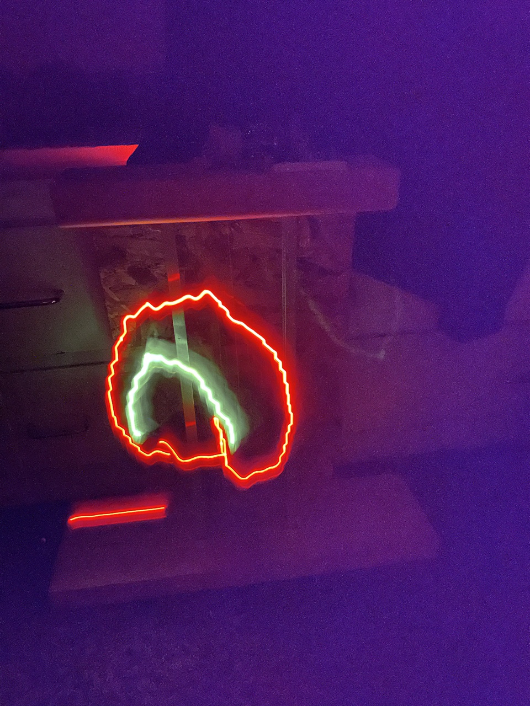
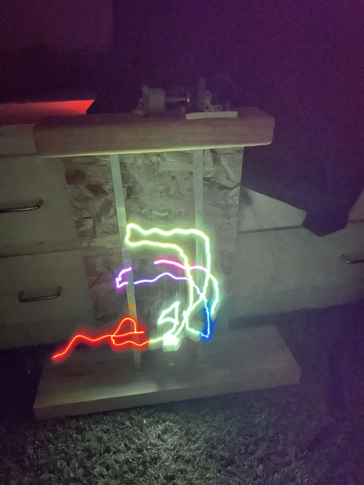
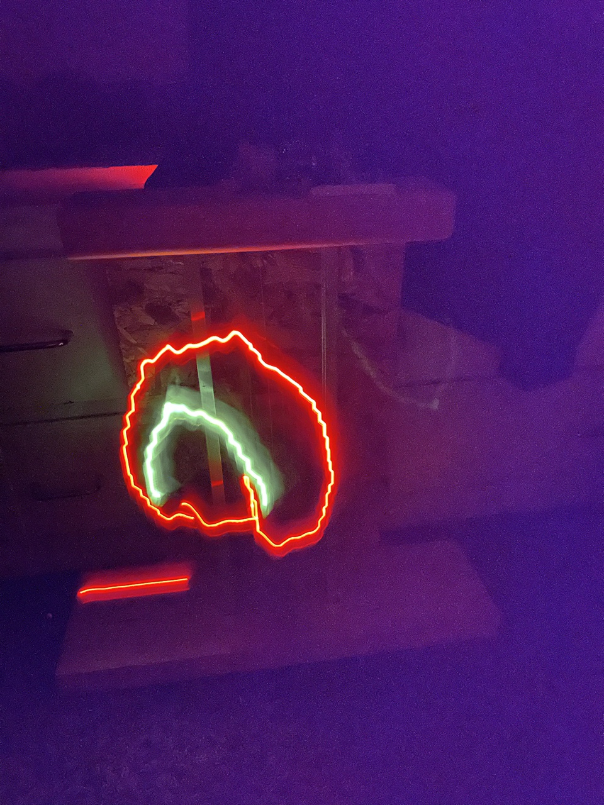
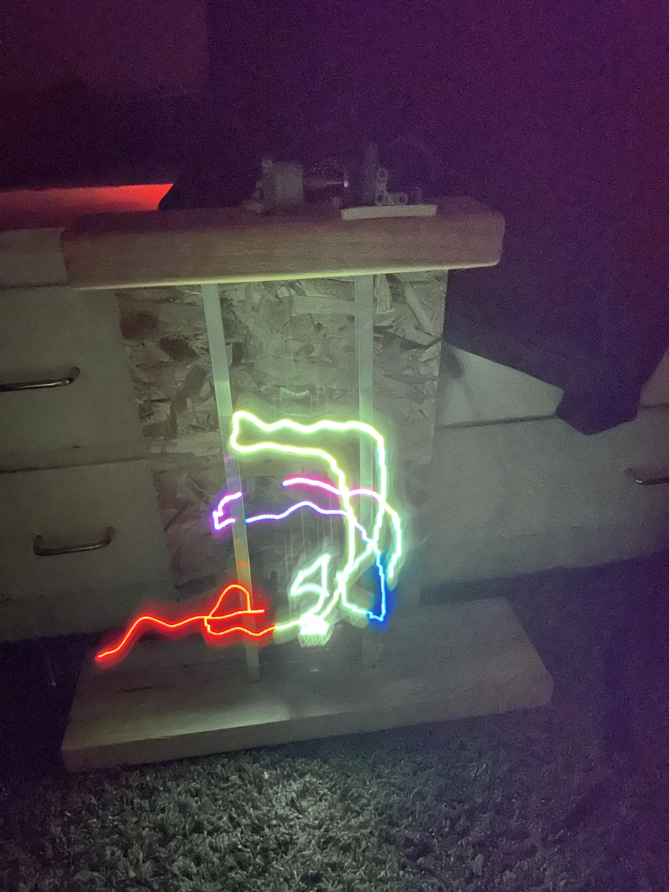

PROJECT OVERVIEW
Ever since I learned about light painting I have always thought that the concept was super cool. After watching some videos of professional light painters on Instagram, I thought that although I didn't know how to light paint very well, I could probably build a robot to paint for me. Shown below is the result of several evenings and weekends spread across roughly 3 months. I will probably revisit this project in the future, as it is one of my favorite things I have ever built.
Project Videos
Watch the AI light painting robot in action:


 



Technical Details
Utilizing the mediapipe hands model, I developed a fingerpainting app. The user's left hand selects colors/picks up the pencil, while the right hand paints the picture.
An array of points and colors are saved, and passed to the robot. The robot is built using a Nema-17 Stepper motor with an MP6500 motor driver, an RGB LED, a custom 3D printed motor shaft adaptor, some legos, dental floss, and a custom built frame. With this frame and a Raspberry Pi 4 as a brain, the robot can perfectly recreate any fingerpainting.
Long exposure photographs are taken using my iPhone 14 Pro. The maximum exposure time is 1 minute which is insufficient in some circumstances to create the artwork. Therefore, for photos like the dragon, I pause the robot midway, take n photos, and then superimpose them to appear as if they are one uninterrupted photograph.
Fingerpaintings are inherently imprecise, so the stop motion videos were created with a drawing app I built, and then light painted by the robot.